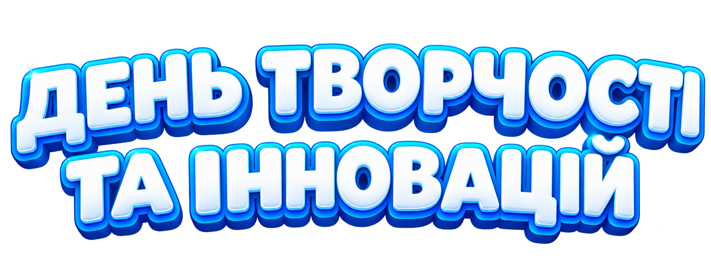
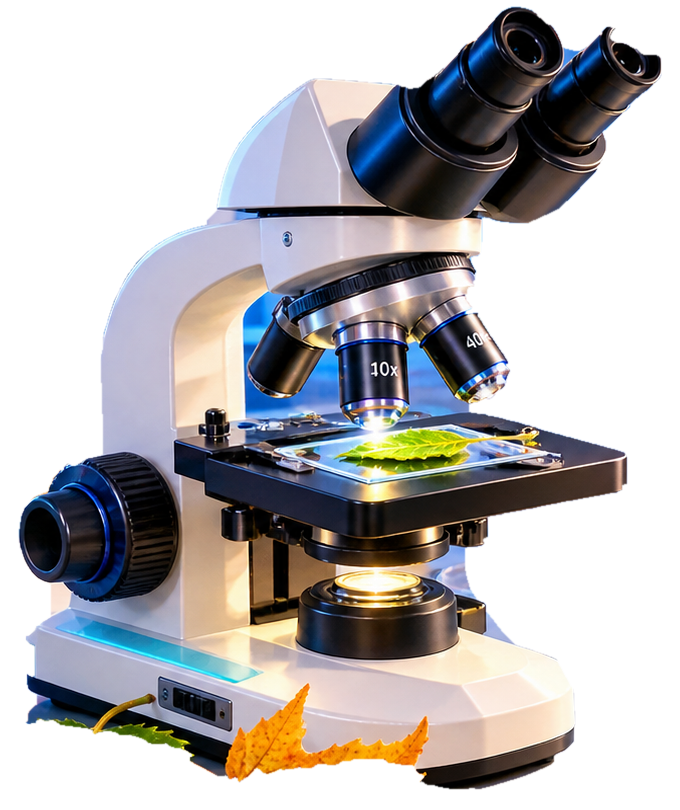
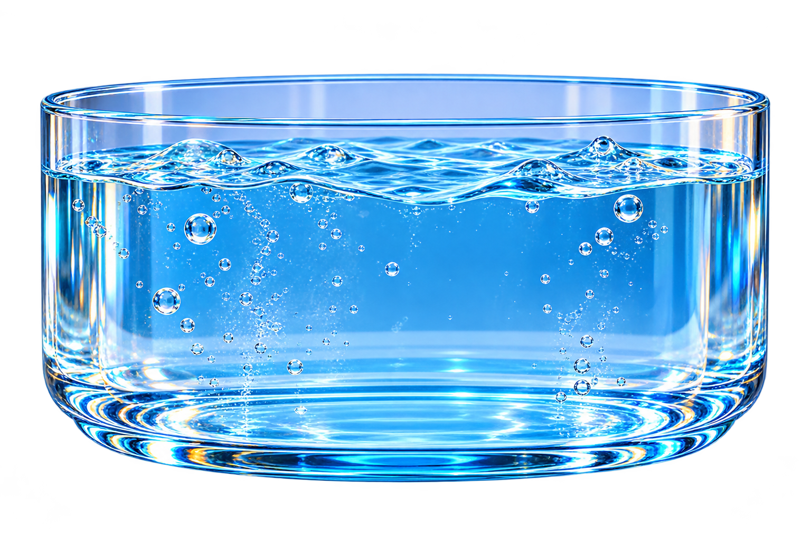
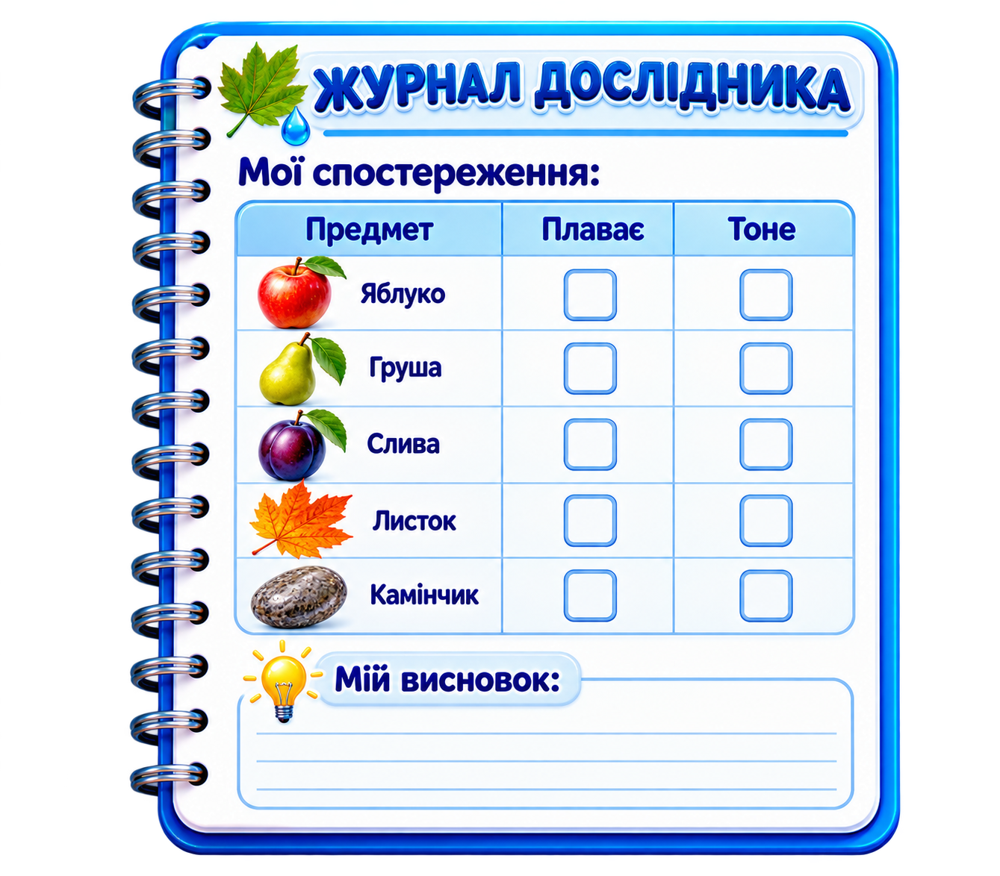
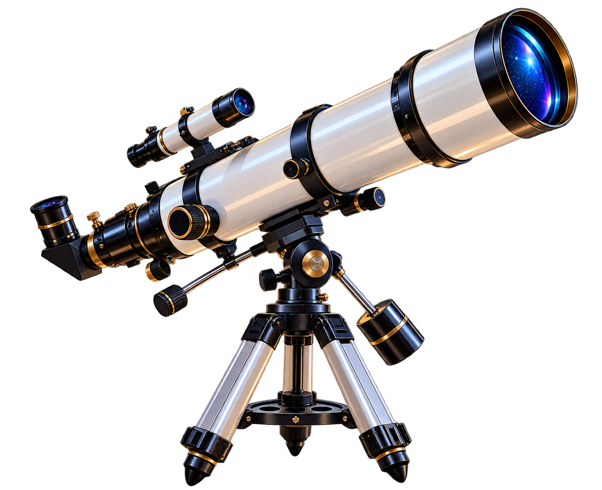

Відгадайте загадку
У зеленому вбранні влітку красуюсь, восени у барви золоті вдягаюсь. Хто я?
Зазирни у світ листочка

Досліджуємо два листочки. Що приховано всередині? Натисніть на обраний листочок.
Що ми побачили?
Осінні дари у воді
Обери предмет для досліду

Натисни на предмет — спостерігай за дослідом.

Запрошуємо до обсерваторії
Обсерваторія — це місце, де досліджують небесні об’єкти. Сьогодні ми спостерігатимемо листопадове небо.
Листопадове небо
У листопаді можна спостерігати метеори. Метеор — це світловий слід, який виникає, коли маленька частинка з космосу входить в атмосферу Землі.
Дивовижний телескоп

Натисни на телескоп.
Він повернеться до зоряного неба.
Він повернеться до зоряного неба.
Сузір’я Тельця
Сузір’я — це ділянка зоряного неба. Серед осінніх і зимових сузір’їв ми можемо відшукати Тельця.
Наш висновок
Ми навчилися уважно дивитися на нічне небо, відрізняти зорі від метеорів та познайомилися із сузір’ям Тельця.
Сузір’я у твоїй кімнаті
Приготуй картон, олівець, підкладку та ліхтарик. Зараз учитель покаже, як створити власне сузір’я.
Листочок залишає слід
Покрий листочок фарбою з одного боку, обережно приклади до паперу і притисни. Який відбиток залишиться?
Творча майстерня